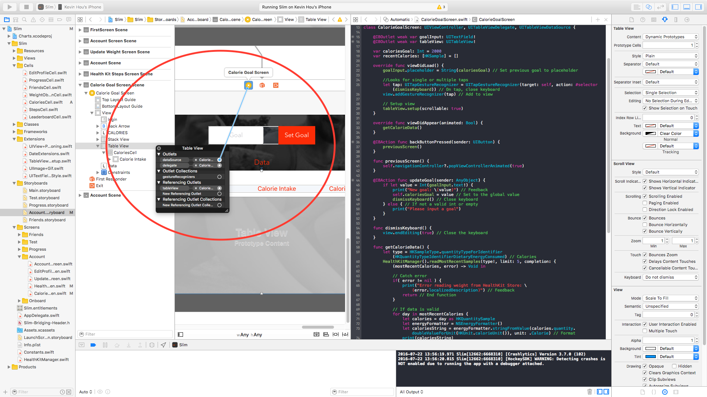

< Return to all blogs
Swift TableView Basics: How to Create and Populate Tables
A quick, bare-bones introduction to Table Views in Swift.
Project Objectives
I was instructed to integrate HealthKit information — specifically pulling steps data — into Breathometer’s upcoming app. I’m realitively new to Swift having only started a month ago, so this project was a way for me to get more familiar with the language and IDE. My task was to pull the data from HealhtKit then populate a table within a page of the app. This data could then be used for visualizations, analysis, etc. Here are my main learning goals for this project:
- Learn how to integrate with HealthKit and pull data from a “3rd party” source (see last post)
- Learn the fundamentals of table views, populating views, etc. so that I can develop a better understanding of Swift frontend
Setting Up the Table
Create a table view property
@IBOutlet weak var tableView: UITableView! // Connect to the storyboard element
Initialize the class and connect it to the storyboard.
class ViewController: UIViewController, UITableViewDelegate, UITableViewDataSource { ... }
Setup different UITableView properties
// Imperative
func tableView(tableView: UITableView, numberOfRowsInSection section: Int) -> Int {
return 0
}
// Imperative
func tableView(tableView: UITableView, cellForRowAtIndexPath indexPath: NSIndexPath) -> UITableViewCell {
return UITableViewCell()
}
func tableView(tableView: UITableView, didSelectRowAtIndexPath indexPath: NSIndexPath) {
// Triggered when you select the row at indexPath
}
Connect dataSource and delegate
You must also link the table view dataSource and delegate to the view controller like so:

Register Cell Class
In the view controller/tableviewdelegate/datasource class, you must register the class for the table view:
override func viewDidLoad() {
super.viewDidLoad()
self.tableView.registerClass(UITableViewCell.self, forCellReuseIdentifier: "cell")
// tableView.setup(scrollable: false) // Turn off scrolling
}Adding Data to Display
First step is to declare the data. In this case we’re going to use dummy data:
var items: [String] = ["Hello", "World", "Swift"]
Using this data, we can now set the number of rows in our table view by calling the function:
func tableView(tableView: UITableView, numberOfRowsInSection section: Int) -> Int {
return items.count
}
Create the Cell
func tableView(tableView: UITableView, cellForRowAtIndexPath indexPath: NSIndexPath) -> UITableViewCell {
var cell:UITableViewCell = self.tableView.dequeueReusableCellWithIdentifier("cell") as UITableViewCell
cell.textLabel?.text = self.items[indexPath.row]
return cell
}
Handling Cell Selection
func tableView(tableView: UITableView, didSelectRowAtIndexPath indexPath: NSIndexPath) {
println("You selected cell #\(indexPath.row)!")
}
Final code
class ViewController: UIViewController, UITableViewDelegate, UITableViewDataSource {
@IBOutlet
var tableView: UITableView
var items: [String] = ["We", "Heart", "Swift"]
override func viewDidLoad() {
super.viewDidLoad()
self.tableView.registerClass(UITableViewCell.self, forCellReuseIdentifier: "cell")
}
func tableView(tableView: UITableView, numberOfRowsInSection section: Int) -> Int {
return self.items.count;
}
func tableView(tableView: UITableView, cellForRowAtIndexPath indexPath: NSIndexPath) -> UITableViewCell {
var cell:UITableViewCell = self.tableView.dequeueReusableCellWithIdentifier("cell") as UITableViewCell
cell.textLabel?.text = self.items[indexPath.row]
return cell
}
func tableView(tableView: UITableView, didSelectRowAtIndexPath indexPath: NSIndexPath) {
println("You selected cell #\(indexPath.row)!")
}
}Custom Cell Layout
By default, all table view cells have the text label and detail label values. To create a custom cell with more than just those two labels, follow these steps:
Drag a Table View Cell onto your UITableView. This will automatically generate a cell labeled “Prototype” that contains a nested content view. Treat this content view as any other view and drag UI elements like text fields, images, etc. onto the content view.
Now, create a new Swift file for the UITableViewCell class to connect your Table View Cell to some code. Initialize the class like so:
class StepsCell: UITableViewCell {
// IB Outlets go here:
override func awakeFromNib() {
super.awakeFromNib()
// Initialization code
}
override func setSelected(selected: Bool, animated: Bool) {
super.setSelected(selected, animated: animated)
// Configure the view for the selected state
}
}
Hook up the UI elements in the content view with IBOutlets in your UITableViewCell class. It’s identical to how you would do this for any other view controller. You can add constraints, stack views, etc. Just treat the content view as you would a blank view controller.
Now to access those UI elements in your main Table View Controller, you must use the “dequeueReusableCellWithIdentifier” command. Dequeue basically describes the manner in which data loads and unloads. If you imagine the scrolling items as a wheel, as the topmost item disappears, it reappears on the bottom. The table view is endlessly recycling the same x number of cells. This is a good approach for memory management especially when dealing with 100+ cells. Once you’ve stored the cell, you can then modify the various UI elements and return the cell to populate the table view.
func tableView(tableView: UITableView, cellForRowAtIndexPath indexPath: NSIndexPath) -> UITableViewCell {
var cell = self.tableView.dequeueReusableCellWithIdentifier("StepsCell")! as! StepsCell // Same identifier as class name
cell.dateLabel.text = "January \(indexPath)"
cell.textLabel?.text = String(indexPath)
return cell
}Other Helpful Topics
For populating table views with data from asynchronous requests, it can be helpful to reload your table view once you know all your data is complete
// Reload in main queue
dispatch_async(dispatch_get_main_queue(), { () -> Void in
self.tableView.reloadData() // Reload
})
Tutorial from: https://www.weheartswift.com/how-to-make-a-simple-table-view-with-ios-8-and-swift/
Posted in Programming with iOS, Swift, Apps, Xcode